← 返回阅读库 · 原论文目录
论文讲解阅读文档 · 表征学习 · v152
Barlow TwinsSelf-Supervised Learning via Redundancy Reduction[2103.03230]
视频时长 00:05:46；讲解文字 2,543 字符；提取讲解画面 21 张。按视频原顺序阅读，每段文字保留时间戳。
文字来自整段视频的自动语音转写，按自然停顿分段，并与 PPT / 论文页面 / 演示画面对齐。未将讲解压缩为摘要；术语、数字和口述公式请结合画面及原论文核对。 阅读稿已校正规范部分明确术语误识别；原始逐字稿和每处修改记录另行保留。
讲解画面为源视频截图（640×360），不是可编辑 PPT 文件。全片按每秒 2 帧扫描内容变化，逐步展开页保留；连续动画保留代表画面。清晰度受源视频限制。
下载完整资料包 · 含离线 HTML、PDF、Word、全部 PPT 画面和字幕。
原论文与材料
Barlow Twins: Self-Supervised Learning via Redundancy Reduction · 下载完整 PDF（13 页）
按时间阅读
00:00:00–00:00:29 · 画面 001
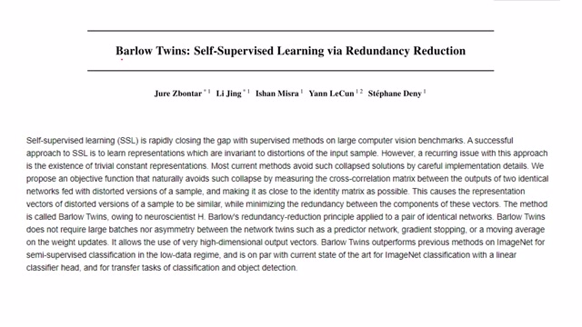
00:00:00–00:00:29 · 画面 001大家好,今天我们来迅速说一篇论文 Barlow Twins Self-Supervised Learning via Redundancy Reduction。那么这篇论文和我们之前介绍的 SimSiam 和 BYOL 它们都是非常类似的，就是研究一种 Self-Supervised 的方法能够学到一个更好的 Representation。那么同之前的方法相比,本文也是使用了两支网络，但是梯度的传递和 Loss Function 的构建是与前文不同的。
00:00:29–00:00:30 · 画面 002
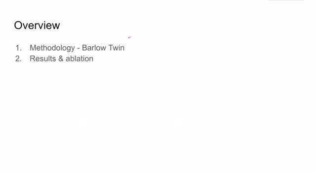
00:00:29–00:00:30 · 画面 002那么在这个视频中我们直接介绍 Barlow Twins 它的核心的实现细节以及作者汇报的结果。首先来看本文提出的网络结构，跟我们之前熟悉的 BYOL SimSiam 一样，一个图像输入进来之后我们对它进行随机的 Data Augmentation。那么这里作者换了一个名字叫做 Distort Images，然后把增强的两组图像输入到两个 Network 里面。
00:00:30–00:00:38 · 画面 003
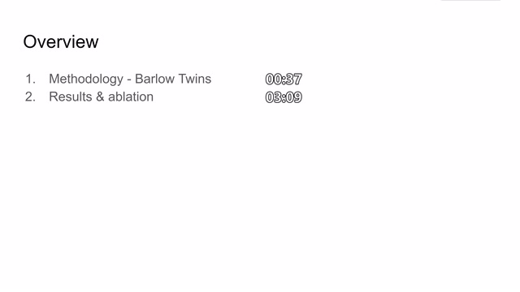
00:00:30–00:00:38 · 画面 00300:00:38–00:00:48 · 画面 004
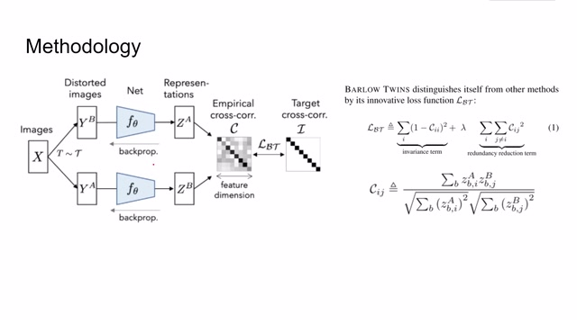
00:00:38–00:00:48 · 画面 00400:00:48–00:00:49 · 画面 005
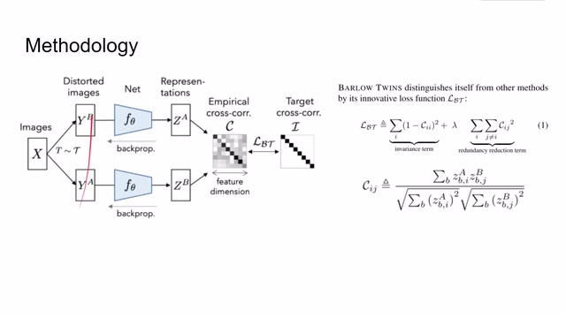
00:00:48–00:00:49 · 画面 00500:00:49–00:02:16 · 画面 006
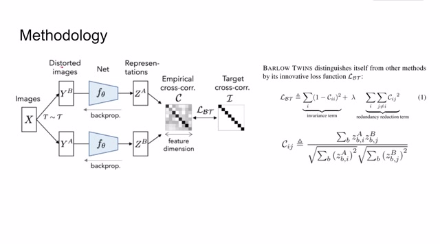
00:00:49–00:02:16 · 画面 006两个 network 它们的参数是完全一样的，就得到两个不同的 latent representation。那么本文的核心在于，那么本文就要构建一种 loss 使得这边 vector 和这边 vector 两个 latent vectors 它们应该尽可能相关。那么我们具体来看，假如说我们得到的 feature 是一个长度为 d 的 vector，那么我们就构造一个 cross correlation 的矩阵，它的宽度和高度都是 d。那么对于这个矩阵上 di 行dj 列的元素来说，那么它就是 latent representation a 中第 i 个元素和 latent representation b 中 dj 个元素它们在这个 batch 中的相关性。那么看到这个表达式这里的 b 呢代表一个 batch 中每一个样本的 index。对于 db 个样本来说呢，它的 latent representation a 中的 d i 个元素
乘上这个样本 latent representation b 中的第几个元素这就是分子分母呢就是进行一个归一化的操作。那么在得到这样一个协方差矩阵之后呢，作者希望我的这个矩阵它的对角线上的元素应该尽量接近于 1，而不是对角线上的元素应该接近于 0。那么也就是这里这里对角线上的元素使它靠近于 1，不是对角线上元素靠近于 0。
00:02:16–00:02:28 · 画面 007
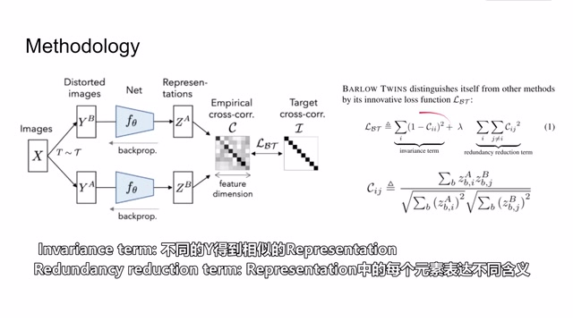
00:02:16–00:02:28 · 画面 007那么这里有个 lambda 来调节这个两个项目之间的 tradeoff。那么这就是本文提出的 barlow twins 的 loss function。那么来到作者提供的伪代码，同样的一个输入样本 x 它会产生 ya 和 yb 两种经过不同的 data augmentation 产生的图像，把它们送到同样的网络中得到两个 latent representation 做 batch normalization，然后计算对于 vector 中每一个元素的 cross correlation matrix。
00:02:28–00:03:04 · 画面 008
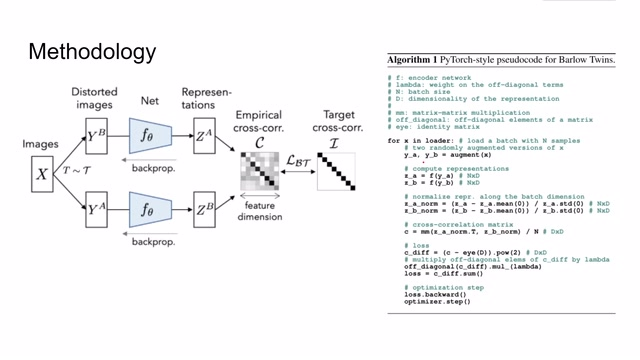
00:02:28–00:03:04 · 画面 008然后呢在这个 matrix 基础上构建我们之前提到的这个 barlow twins 的这样一个 loss 最后呢再来训练这个网络可以看到可以看到呢在这两路呢都是有梯度来进行传递的那么这就是本文 barlow twins 的核心思想那么来到作者汇报的结果那还是我们的老朋友 ImageNet 那么这个表格呢还是 latent representation 后面加一层 linear layer 那么对比了我们常见的一些
00:03:04–00:03:05 · 画面 009
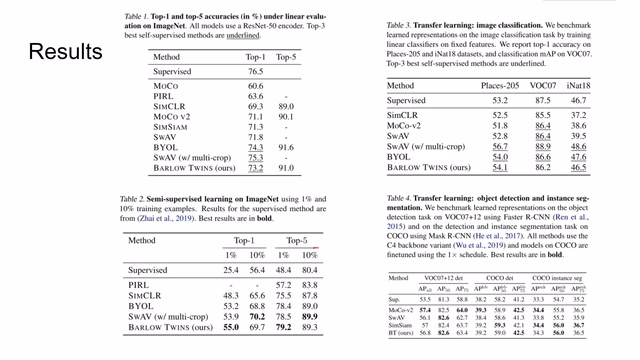
00:03:04–00:03:05 · 画面 00900:03:05–00:03:10 · 画面 010
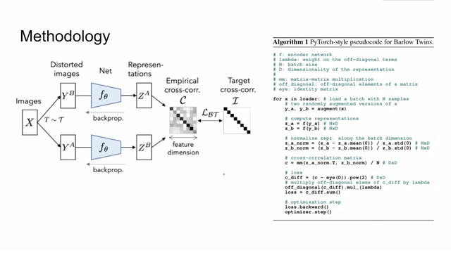
00:03:05–00:03:10 · 画面 01000:03:10–00:03:24 · 画面 011
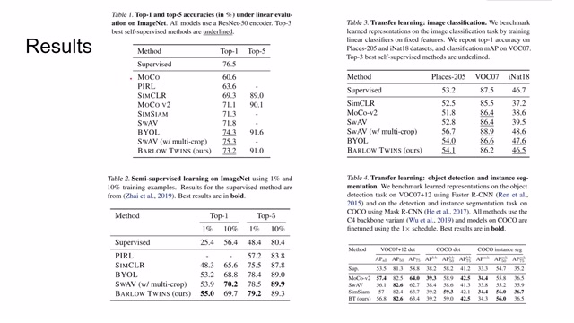
00:03:10–00:03:24 · 画面 011unsupervised 的方法还有 supervised 的方法。那么这里呢是使用了 1%和 10%的 training labels 进行了 fine-tune。那么得到的结果呢在这里，那么作者还测试了各种 transfer learning 的任务，比如说换了不同的数据集或者是做 object detection instance segmentation 这样的任务。
00:03:24–00:03:28 · 画面 012
00:03:24–00:03:28 · 画面 01200:03:28–00:03:29 · 画面 013
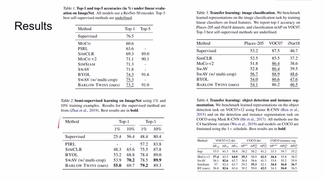
00:03:28–00:03:29 · 画面 01300:03:29–00:03:32 · 画面 014
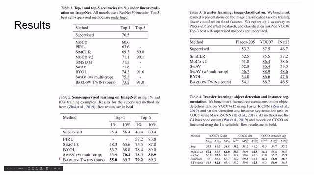
00:03:29–00:03:32 · 画面 01400:03:32–00:03:40 · 画面 015
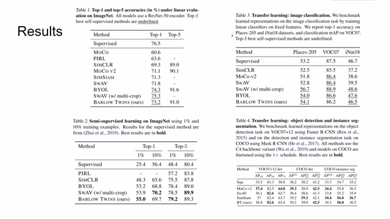
00:03:32–00:03:40 · 画面 01500:03:40–00:03:43 · 画面 016
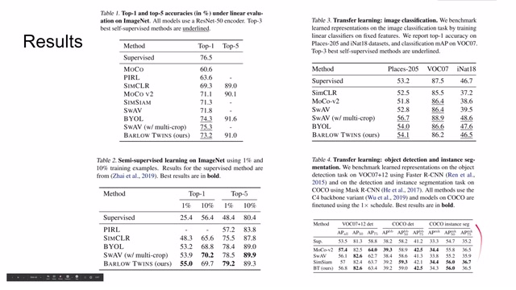
00:03:40–00:03:43 · 画面 016那么这里都是作者汇报的结果，那么我们可以看到呢，如果你的方法表现不那么好，但你一定要用下说点什么时候，你可以把前三个最好的这个 self-supervised 方法呢都给它标上 underline，对吧？这样子人第一眼就不会注意到你的方法性能其实没有别人那么好。那么此外呢，作者还做了一些消融实验，作者这里尝试了不同 loss function 的组合，设了这么多种组合，那选一种最好的就是我们提出的 baseline，然后作者还尝试了 batch size
00:03:43–00:03:58 · 画面 017
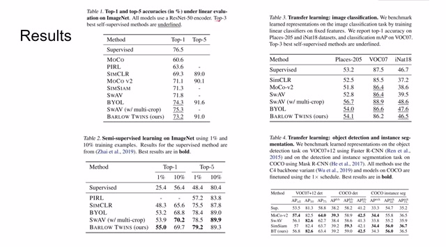
00:03:43–00:03:58 · 画面 01700:03:58–00:04:37 · 画面 018
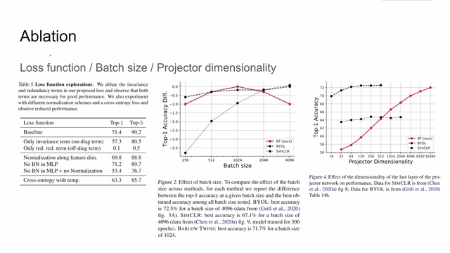
00:03:58–00:04:37 · 画面 018batch size 这个曲线很有意思，对于不同大小的 batch size 这里有一个 sweet point，也就是 1024，作者由此得出本文的方法是对 batch size 是鲁棒的。那么当然这个图还是有一个陷阱的就是它的纵轴是 top1 准确率的下降，那么也就是说，虽然这里我们看到作者提出的方法好像是比 BYOL 要好，但是这个 0 这个 top1 的准确率它们的起点本来是不一样的
00:04:37–00:04:45 · 画面 019
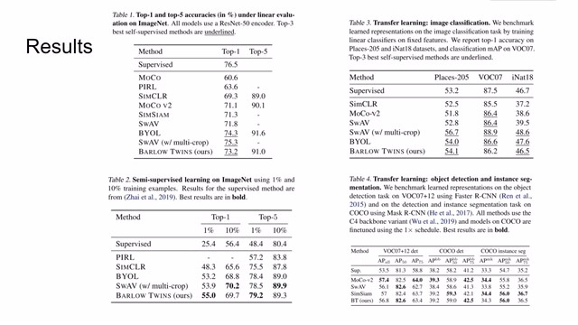
00:04:37–00:04:45 · 画面 019那么回到刚才我们发现这个 BYOL 它的起点是要比本文提出的起点要高，大概 1.16%点的，所以大家千万不要被这种可视化的 trick 所误导。那么此外呢，作者还发现一个有趣的现象就是最后的 projector dimension，也就是我们在得到 representation 之后加一层 linear layer，这个 linear layer 它的 dimension，可以看到本文提出的方法对于最后的 linear layer 的 dimension 是非常敏感的
00:04:45–00:05:45 · 画面 020
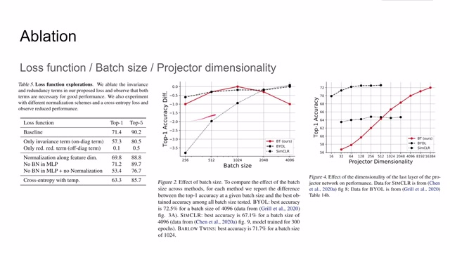
00:04:45–00:05:45 · 画面 020而且只有后面的网络的结构足够大那么本文的优势才能够逐渐的体现出来达到一个和 BYOL 相接近但是仍然差那么一个百分点的水平那么总的来说本文提出了一种新的构建 self-supervised learning 的方法它的性能虽然赶不上 BYOL 这种 state of art 但也算相对的名列前茅当前作者发布的论文还是处在一个相对早期的阶段，那么后续我们会继续关注这篇论文，看作者是否会为我们带来更多惊喜。好的，那么以上就是我对这篇论文的简单的一个分析，感谢您的收看，再见
00:05:45–00:05:46 · 画面 021
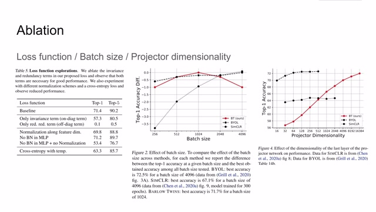
00:05:45–00:05:46 · 画面 021转写与来源说明 · 0 个自动复核提示
保留 13 个原始语音片段，0 个片段触发自动复核提示。提示仅用于定位可能的术语、重复或识别问题，不等于已确认错误。
讲解画面为源视频截图（640×360），不是可编辑 PPT 文件。全片按每秒 2 帧扫描内容变化，逐步展开页保留；连续动画保留代表画面。清晰度受源视频限制。
原视频：paper/合集_2026-10-16_表征学习/[论文简析]Barlow TwinsSelf-Supervised Learning via Redundancy Reduction[2103.03230].mp4
SHA-256：b88f1b7832efcd4f88aaaa5d0a2474b230778af84ae925f60d5367237dc6e76a
全文按视频语音与画面制作。原论文可从上方链接下载；完整资料包保留全文、原始逐字稿、字幕和校对记录。